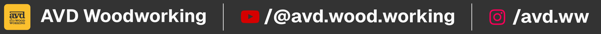

AVD Wood Working
16 April 2025 | An Invited Talk on Wood Working#
Summary of the talk
My woodworking journey began in 2005, crafting furniture from scrap wood, evolving into a lifelong passion blending creativity, patience, and heritage. I taught wood basics (grain, hardwoods vs. softwoods), key tools (saws, chisels), 13 joinery techniques, and safety. Emphasized starting small, practicing, and viewing woodworking as a rewarding, evolving craft where dedication yields timeless creations.